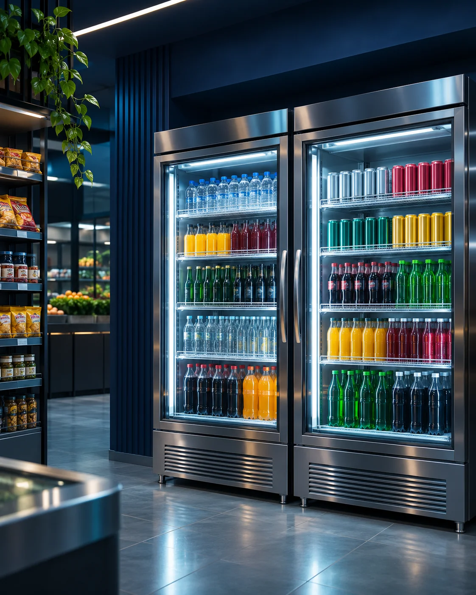

Refrigeração comercial
Cuidado com os equipamentos que fazem parte da rotina do seu negócio.
- Expositores e balcões refrigerados
- Geladeiras comerciais
- Ilhas refrigeradas e câmaras frias
Refrigeração comercial e doméstica em Aracaju. Da manutenção do seu expositor ao cuidado com os equipamentos da sua casa.

Conte para a gente qual equipamento precisa de atenção. A equipe orienta você sobre o próximo passo.
Cuidado com os equipamentos que fazem parte da rotina do seu negócio.
Mais tranquilidade para os equipamentos que você usa todos os dias.
Um equipamento dando sinais de problema? Não deixe para depois.
Por trás de cada equipamento, existe uma rotina que precisa continuar. A Cold Tech atua com refrigeração comercial e doméstica, conectando conhecimento técnico ao cuidado com o seu dia a dia.
Veja os serviços, equipamentos e o trabalho da equipe no Instagram.
Instagram @coldtech.ajuEmpresas e instituições presentes nos trabalhos e parcerias divulgados pela Cold Tech.
Envie o modelo, uma foto e uma descrição do problema.
Assim a conversa já começa no caminho certo.
Entre em contato pelo WhatsApp com o modelo do equipamento, fotos e uma descrição do problema. A equipe informa as condições para avaliação e orçamento.
Sim. A Cold Tech divulga serviços para refrigeração comercial e doméstica. Consulte a equipe para confirmar o atendimento ao seu modelo.
A Cold Tech atende em Aracaju/SE. Confirme o endereço e as orientações diretamente pelo WhatsApp antes de se deslocar.